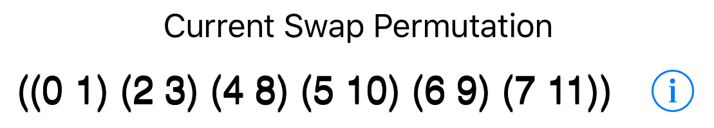
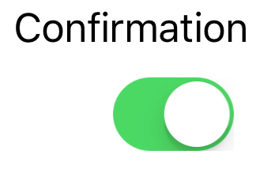
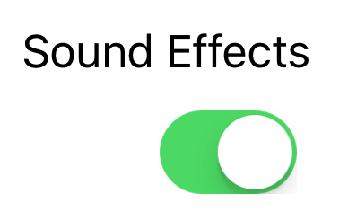
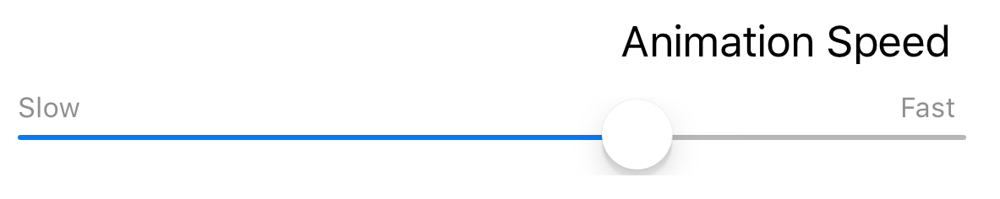

which takes you to the Swap permutations page.
which takes you to the Swap permutations page.

This displays the current swap permutation in cycle notation. Since a swap permutation exchanges the numbers on pairs of same-colored balls, each cycle is just two ball numbers.
The most interesting part is the disclosure button
which takes you to the Swap permutations page.

This slide switch enables or disables the pop-up confirm dialogs that make sure you really want to Shake, Restart or go Home.

This slide switch enables or disables the various sounds the puzzle makes.
You can always turn the volume down with the usual ringer switch.

This slider determines how fast the numbers move as a result of various moves. Move the slider to the left for the slowest motion, or completely to the right for instantaneous change.